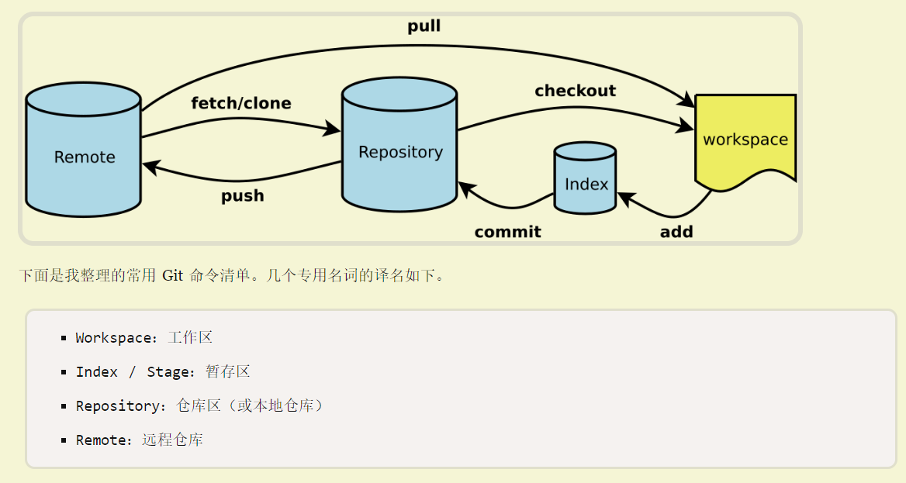
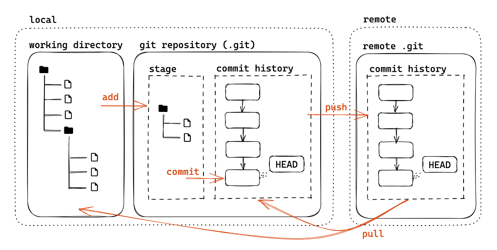
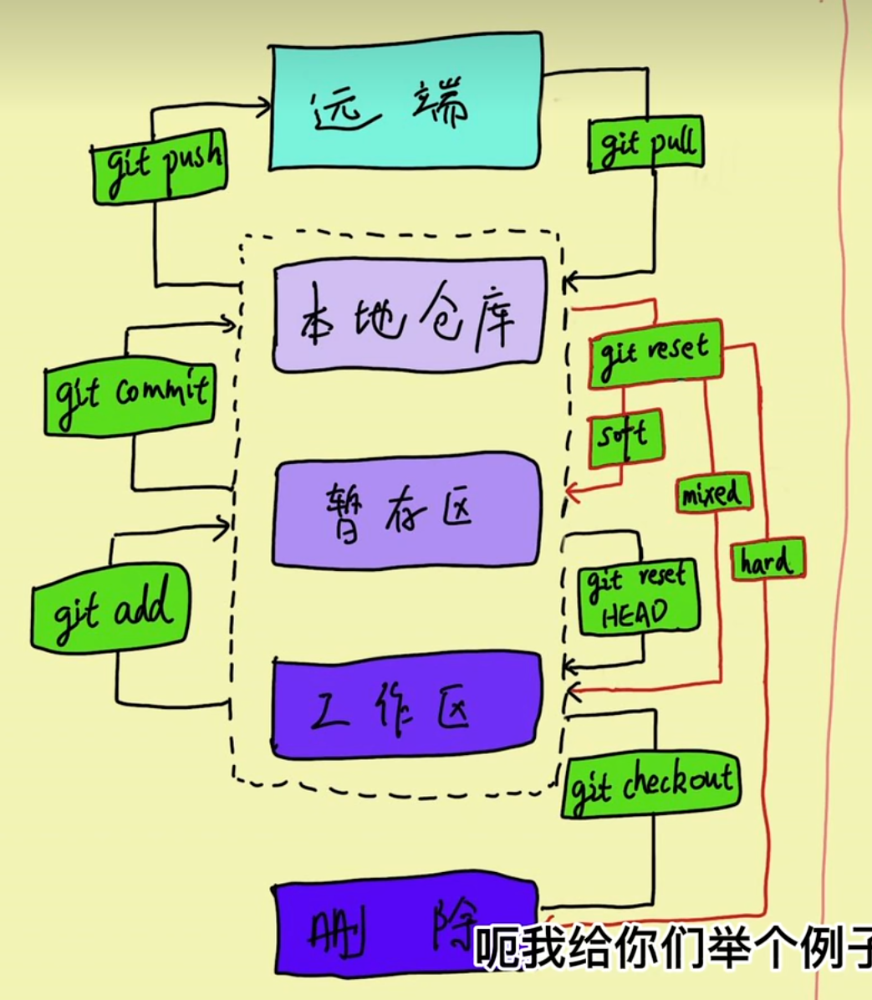

Git
好的资料#
https://slides.tonycrane.cc/PracticalSkillsTutorial/2023-spring-cs/lec2/#/2/4 https://www.liaoxuefeng.com/wiki/896043488029600/896067074338496 https://space.bilibili.com/35894086/channel/collectiondetail?sid=941763
一图胜千言#
  
{kind=link}
{kind=link}
{kind=link}
git push#
push 的时候 名称不一样怎么办
ChatGPT:
如果本地分支与远程仓库的对应分支的名称不一样，你可以在 git push 命令中指定远程分支的名称。语法如下：
git push <远程仓库名称> <本地分支名称>:<远程分支名称>
git merge 如果没有冲突只是在移动指针 有冲突的话 从工作区-》暂存区-》本地仓库 发生变化 产生一个新的commit节点 以下是导致合并冲突的常见情况：
同时修改同一行代码：如果两个分支上的修改都涉及同一行代码，那么 Git 无法自动确定应该保留哪个修改。
删除或重命名文件：如果一个分支删除了一个文件，而另一个分支修改了该文件，或者两个分支重命名了同一个文件，那么合并时会出现冲突。
合并历史中的分叉：如果要合并的两个分支之间的提交历史有分叉，即它们有共同的祖先但在某一时刻分开发展，那么合并时可能会产生冲突。
修复bug时，我们会通过创建新的bug分支进行修复，然后合并，最后删除；
当手头工作没有完成时，先把工作现场git stash一下，然后去修复bug，修复后，再git stash pop，回到工作现场；
在master分支上修复的bug，想要合并到当前dev分支，可以用git cherry-pick
git branch#
git 切换分支时
如果切换的分支和当前分支属于同一个commit节点，那么会把未add或未commit的内容带过去
不属于同一个commit节点的，那么在当前节点没有commit的情况下是无法切换的(这就引出了git stash 的作用)
git stash#
git stash 命令会将工作目录中"未提交的修改"（包括已跟踪的文件即曾执行过git add的文件和暂存区中的修改，工作区中新建的未git add的文件不在其中）保存起来，以便稍后恢复使用。存储的这些修改并不直接保存在仓库中，而是保存在Git的存储区域中。具体来说，git stash 将修改存储在栈中，可以通过 git stash list 命令查看当前存储的所有 stashes。
存储的修改会以栈的形式存储，你可以通过 git stash apply 命令来将最新的 stash 应用到工作目录中，或者通过 git stash pop 命令来应用并从 stash 栈中移除最新的 stash
常用场景#
- 切分支修bug 开发到一半 无法提交
- 代码开发完了，准备提交 同事修改了同一个文件，出现远端冲突 先stash 再拉 再 pop 处理冲突后提交
关于 commit message#
意义是什么：记录更改的原因 / 内容，方便定位 / 回溯（特别是合作项目）
Angular 规范（来源：angular/angular:CONTRIBUTING.md）
[body]
[footer] type：更改类型（fix/feat/docs/refactor/perf/test/ci/...） 重大更改可以写 BREAKING CHANGE 或 DEPRECATED（全大写） scope：影响范围（可选，比如具体影响的模块等） summary：更改的简要描述，英文一般现在时，首字母小写句末无句号 body：详细描述，可选 footer：解决 issue 了可以写 Fixes #id 或 Closes #id
分支#
什么是分支名：和 HEAD 一样，也是一个指针（实际上叫引用 ref）
可以基于 ref 使用 ~ 或 ^ 定位父提交
~ 表示第一个父提交，~2 表示第一个父提交的第一个父提交
^ 表示第一个父提交，^2 表示第二个父提交
一个提交可能会有多个父提交（merge commit）
什么时候无法push pull git pull=git fetch+merge|rebase#
远程仓库和本地仓库不是同一个commitId||远程本地有冲突||未提交本地或者暂存区内容
Git Merge 与 Git Rebase：原理对比与黄金法则#
在 Git 工作流中，合并代码主要有两种方式：Merge（合并）和 Rebase（变基）。理解它们的区别对于维护清晰的项目历史至关重要。
1. Git Merge (合并)
定义：git merge 是一种非破坏性的操作。它会创建一个新的"合并提交"（Merge Commit），将两个分支的历史连接在一起。
- 特点：保留了完整的历史记录，包括分支的起始位置和合并位置。
- 优点：真实记录了开发的发生过程，安全，不会改变现有的提交 ID。
- 缺点：如果频繁合并，提交历史会变得像"地铁线路图"一样错综复杂，不利于阅读。
2. Git Rebase (变基)
定义：git rebase 会将当前分支的提交"移动"到目标分支的最新提交之后，形成一条线性的历史记录。
- 特点：会改变提交历史，重写提交 ID。
- 优点：历史记录整洁，是一条直线，���于阅读和理解。
- 缺点：会改变历史，如果已经 push 到远程，会造成严重问题。
(注：在 Rebase 中，C 和 D 会被重新应用为 C' 和 D'，接在 E 后面，形成一条直线)
3. 黄金法则：绝对禁止的操作
⚠️ 警告：永远不要在公共分支（Public Branch）上执行 Rebase！
定义"公共分支"：任何你已经 push 到远程仓库（如 GitHub/GitLab），并且你的同事可能正在基于此分支进行开发的分支。
为什么？（灾难演示）
假设你和同事小王都在 feature-login 分支上开发：
- 同步状态：你和小王都拉取了远程分支，本地都有提交 A -> B -> C。
- 你的操作（Rebase）：你想同步主干代码，在本地执行了
git rebase main。Git 会把你本地的 C 变成 C'（内容一样，但 ID 变了）。你强制推送（force push）了这一变更。 - 小王的状态（灾难发生）：小王准备提交代码，他执行
git pull。 - Git 发现远程是 A -> B -> C'。
- 但小王本地还保留着旧的 A -> B -> C。
- 结果：Git 会认为 C 和 C' 是两个完全不同的提交。合并后，历史记录里会出现两份内容一模一样的提交，不仅历史线混乱，还极易引发严重的冲突。
总结建议
| 场景 | 推荐操作 | 原因 |
|---|---|---|
| 本地个人分支 | git rebase |
在 push 之前整理自己的代码，保持历史整洁 |
| 拉取公共代码 | git pull --rebase |
避免产生不必要的"Merge branch 'master' into ..."提交 |
| 合并回主干 | git merge |
如果需要保留功能开发的上下文（即显示这是一个独立功能） |
| 公共/共享分支 | 严禁 Rebase | 遵守黄金法则，避免破坏团队协作历史 |